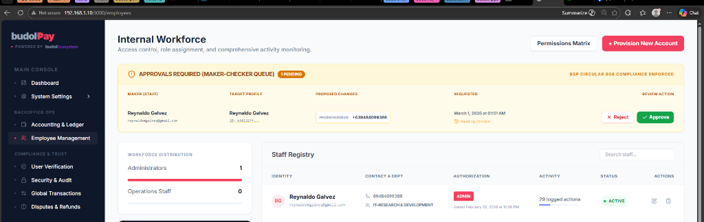

Walkthrough: Maker-Checker Compliance (v5.5.0)
This walkthrough demonstrates the newly implemented Maker-Checker Workflow and Multi-Channel MFA gating for the Internal Workforce Registry, ensuring total compliance with BSP Circular 808 and NPC Data Privacy regulations.
1. MFA-Gated Action Initiation
When an administrator attempts to edit a staff profile, they are now challenged with a multi-channel OTP verification.
Identity Verification
The OTPVerificationModal intercepts the action and requires a code sent
simultaneously via both SMS and Email Gateways. This redundancy ensures compliance with
BSP high-availability standards for security alerts.
2. Initiating a Change (The Maker)
Once verified, the admin can modify fields. If sensitive fields (Email, Phone, Role) are changed, the system transitions into Change Request Mode.
3. Stability & ID Bridging (Bug Fix)
We identified and resolved an Internal Server Error (Prisma P2003) caused by a mismatch
between SSO (budolID) User IDs and local database IDs.
Technical Resolutions:
- SSO-to-Local Bridge: The
/api/auth/meendpoint now automatically resolves and returns the localUser.idfor the logged-in administrator. - Backend Safeguards: Added explicit
makerIdandcheckerIdexistence checks in theemployeesAPI to prevent database-level constraint failures. - Error Handling: Improved API responses to provide specific guidance (e.g., "Maker ID not found") instead of generic server errors.
Enforced Maker-Checker Lifecycle

4. The Approval Queue (The Checker)
A second administrator (The Checker) sees the pending requests in a dedicated Approval Queue dashboard on the staff registry page.
Reviewing Proposed Changes
The Checker can compare the "Proposed Changes" and verify they align with organizational policy.
5. Segregation of Duties Enforcement
The system explicitly blocks "Self-Approval" at the API level (BSP Compliance).
6. Summary of Compliance Enhancements
Next Version Planning: Transition to Redis for distributed OTP management.